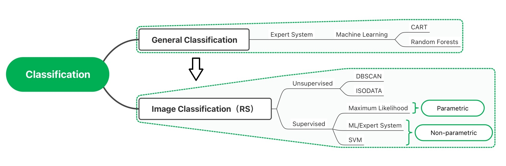
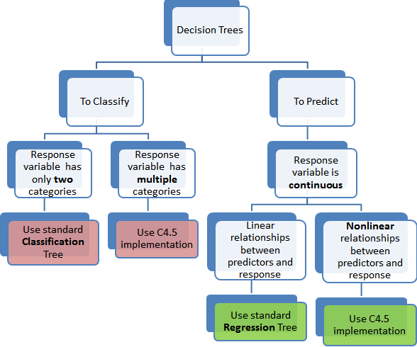
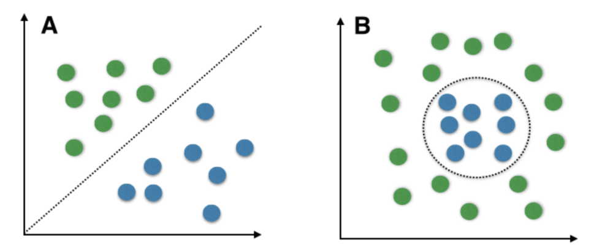
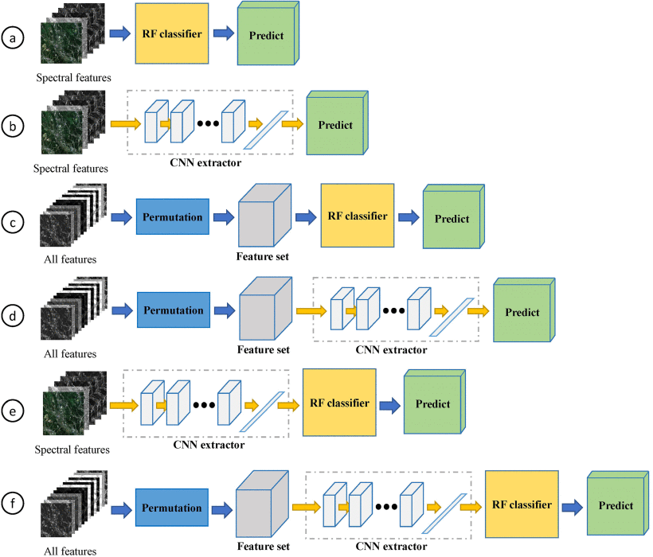

| Basics | Specifics |
|---|---|
| Decision rule classifier | From histogram to probability density function |
| Uses probability | In imagery this is n dimensional multivariate normal density function |
| Takes the image and assigns pixel to the most probable land cover type. | Each pixel from image data is passed to the maximum likelihood rule > assigns landover to the largest product. |
| Takes the image and assigns pixel to the most probable land cover type. | Based on probability, the data (landcover) most probably to have the values in our pixel |
6 Chapter 6 - Classification I
6.1 Summary

6.1.1 Machine Learning
- What is Machine Learning?
Machine learning = science of computer modeling of learning process;Machine learning this is a search through all the data to explain the input data and can be used on new input data.
6.1.1.1 Classification and regression trees (CART)
1.Classification trees classify data into two or more discrete (can only have certain values) categories
2. Regression trees predict continuous dependent variable

Data source:Digital Vidya
- Use Gini impurityto quantify an impure leaf.
Gini impurity= 1-(probability of yes)^2-(the probability of no)^2
6.1.1.2 Random Forests
- RF characteristic
We get many, many different trees = a forest Run the data we have down the trees Which option gets more votes based on all the trees: Make decision tree from random number of variables (never all of them)
We get many, many different trees = a forest
Run the data we have down the trees
Which option gets more votes based on all the trees
Bootstrapping (re-sampling by replacement data to make a decision = bagging):For each tree about 70% of the training data is used in the bootstrap, 30% is left out of the bag (OOB)
Proportion of OOB incorrectly classified = OOB error
Often the number of variables per tree is calculated from square root of variables in the original data.
Often the number of variables per tree is calculated from square root of variables in the original data.
Out of Bag Error:All trees that didn’t have the values;Average prediction error - number of correct predicted/total
Validation data: never included within the decision tree
6.1.2 Unsupervised
6.1.2.1 Maximum Likelyhood
Content source:Andrew Maclachlan
6.1.3 Supervised
6.1.3.1 Support Vector Machine (SVM)
Support Vector Machine (SVM) is a relatively simple Supervised Machine Learning Algorithm used for classification and/or regression. It is more preferred for classification but is sometimes very useful for regression as well. Basically, SVM finds a hyper-plane that creates a boundary between the types of data. In 2-dimensional space, this hyper-plane is nothing but a line. In SVM, we plot each data item in the dataset in an N-dimensional space, where N is the number of features/attributes in the data. Next, find the optimal hyperplane to separate the data. So by this, you must have understood that inherently, SVM can only perform binary classification (i.e., choose between two classes). However, there are various techniques to use for multi-class problems. Support Vector Machine for Multi-CLass Problems To perform SVM on multi-class problems, we can create a binary classifier for each class of the data. The two results of each classifier will be :
The data point belongs to that class OR The data point does not belong to that class. For example, in a class of fruits, to perform multi-class classification, we can create a binary classifier for each fruit. For say, the ‘mango’ class, there will be a binary classifier to predict if it IS a mango OR it is NOT a mango. The classifier with the highest score is chosen as the output of the SVM. SVM for complex (Non Linearly Separable) SVM works very well without any modifications for linearly separable data. Linearly Separable Data is any data that can be plotted in a graph and can be separated into classes using a straight line. 
Data source:geeksforgeeks
6.2 Applications
Very High Resolution Remote Sensing Imagery Classification Using a Fusion of Random Forest and Deep Learning Technique—Subtropical Area for Example(Dong et al., 2020)
- This paper attempts a method based on the neural fusion of Random Forest (RF) classifiers and Convolutional Neural Network (CNN) and uses this fusion for forest mapping in very high resolution remote sensing (VHRRS). In a traditional CNN, the FC layer is used as the final decision base to calculate the likelihood of a pixel belonging to each class. But there are some drawbacks, such as the tendency to over-fit, especially when the sample size is not large enough. So in this paper, a fusion of RF and CNN is proposed in order to optimise the classification. The detailed method is shown in the figure, where the research team first trains the CNN end-to-end using images and labels. In the process, the CNN is trained until a relatively low loss and high accuracy is achieved. The feature maps are then obtained by processing the images using the trained CNNs. This paper has two advantages over other research papers in the same field. Firstly a test was carried out to confirm whether the fusion of CNN and RF could improve VHRRS information extraction. The second is based on RF and the selection of variables with high importance. The test was then conducted again to confirm whether learning from the selected variables would further provide better results. The current shortcoming of this model is that the model is computationally intensive and therefore requires a high level of hardware equipment and cannot be adapted to most computer equipment.

- Random forest classifier for remote sensing classification(Pal, 2005)
This article is an early comparison of SVM and random forest applications in remote sensing classification. Using Landsat Enhanced Thematic Mapper Plus (ETM+) data for a region of the UK with seven different land covers, the performance of a random forest classifier is compared with that of a support vector machine (SVM) in terms of classification accuracy, training time and user-defined parameters. It was concluded that the random forest classifier can achieve classification accuracies comparable to those achieved by support vector machines. Another advantage of the Random Forest classifier is that it only requires two parameters to be set, whereas the SVM requires many user-defined parameters. The random forest classifier can handle categorical data, unbalanced data and data with missing values, which is not easy for SVMs to do. The classifier also provides the relative importance of different features in the classification process, which is useful in feature selection. In addition, the random forest classifier provides a method for detecting outliers by using proximity analysis, which can be used for unsupervised learning.
6.3 Reflection
It has been a very rewarding week of learning about remote sensing. I understood that the reason why images are classified is because of the need to estimate values of practical significance such as GCSE scores or pollution indices with the help of remote sensing images. Also learnt that the predecessor to machine learning was having a priori knowledge or experts developing rules and then importing the rules into a computer. The decision tree part was very interesting, using the Gini coefficient, always looking for the lowest point, finding it and then splitting it in two to build the tree and repeating this step. It is important to note that the left part of the data is used to build the tree, while the right is used to continue finding the lowest point for classification. The most challenging part is the SVM, which allows misclassification of data to occur, and I have to study this part in depth to get a more accurate and detailed understanding.
6.4 Reference
Dong, L., Du, H., Mao, F., Han, N., Li, X., Zhou, G., Zhu, D., Zheng, J., Zhang, M., Xing, L., Liu, T., 2020. Very High Resolution Remote Sensing Imagery Classification Using a Fusion of Random Forest and Deep Learning Technique—Subtropical Area for Example. IEEE J. Sel. Top. Appl. Earth Obs. Remote Sens. 13, 113–128. https://doi.org/10.1109/JSTARS.2019.2953234
Pal, M., 2005. Random forest classifier for remote sensing classification. Int. J. Remote Sens. 26, 217–222. https://doi.org/10.1080/01431160412331269698